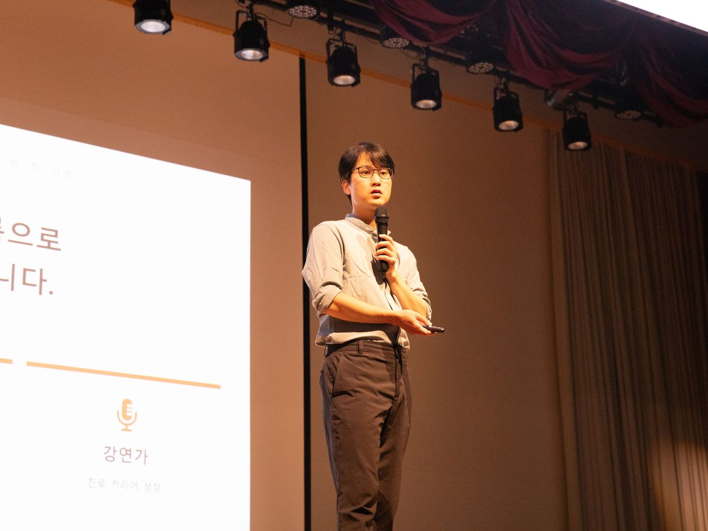
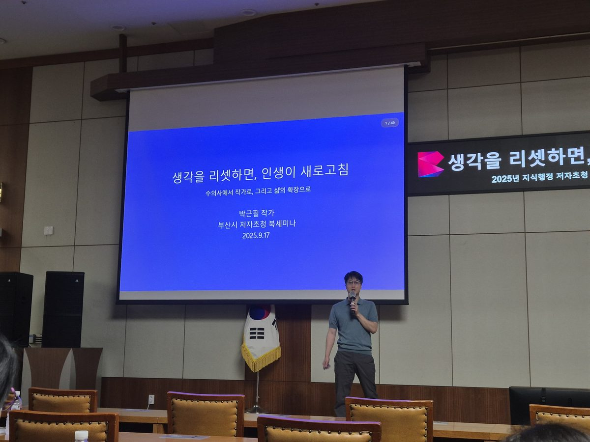
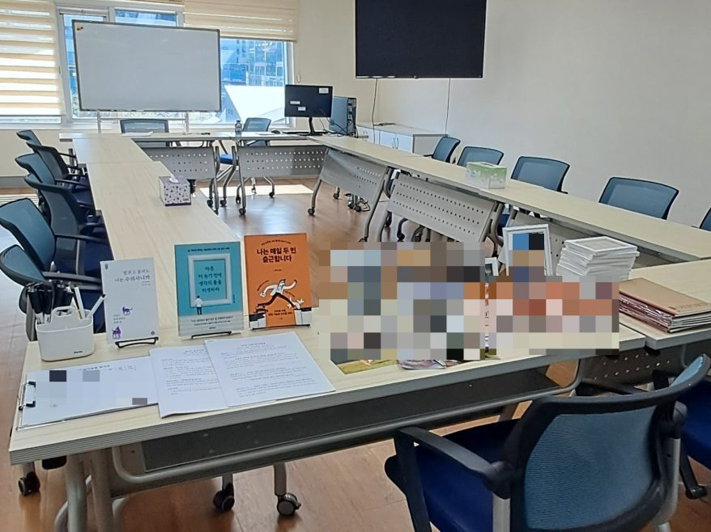

2분 48초 소개 — 어떤 강연을 하는 사람인가
강연 소개서 PDF 내려받기 (A4 2장)
AI 시대, 더 귀해지는 건
사람이 하는 말입니다
읽고 쓰는 힘을 직업의 무기로 바꿉니다.
타인의 성장을 돕는 그로쓰 퍼실리테이터입니다.
한 번 부른 곳이 다시 부르고, 다른 곳에 소개합니다.
ONN TV 〈신비한 동물 사전〉 고정 출연(1회 2026.8.30 방영) · 한국시니어TV 〈생각을 바꾸는 시간, S클래스〉 2부작(1부 8.31 방영 · 2부 9.7 방영 예정) · 온토리TV 「펫로스 치유 글쓰기」(9.15 공개 예정) · 호오컨설팅 유튜브 채널 펫로스 촬영(9.22 예정)
부산시교육청영재교육진흥원 교원 직무연수 강사 · 부산시청 공무원 200여 명 특강 · 경향신문 인터뷰
박근필성장연구소는 수의사이자 작가, 커리어 스토리텔러 박근필이 운영하는 강연·집필 활동의 공식 사이트입니다. 20년 가까이 진료실을 지킨 임상 수의사로 일하다 마흔에 번아웃으로 동물병원을 정리했고, 2022년 11월 블로그를 시작해 작가가 됐습니다. 수의사를 그만둔 것이 아니라 수의사와 작가를 함께 하고 있습니다.
학교에서는 진로·직업 특강과 진로독서를, 도서관에서는 독서·문해력·글쓰기 강좌를, 보호자를 위해서는 펫로스 치유 글쓰기(펫러스)를 진행합니다. 기업·기관 커리어 강연과 교원 직무연수도 맡습니다. 지금까지 전국 초·중·고 38개교에서 강연했고, 저서 5권을 냈으며, 26곳 매체에 칼럼을 연재하고 있습니다. 두산 계열 온라인 백과사전 두피디아와 계약을 맺고 동물 백과사전 항목도 집필하고 있습니다. 2026년 8월 20일 개편 오픈한 네이버 지식백과 「N지식백과 x 두피디아」로 서비스되고 있습니다.
직업을 이름이 아니라 그 일을 살아가는 사람의 이야기로 풀어내는 관점 — 이것을 ‘직업인문학’이라 부릅니다. 그 관점으로 직업을 전하는 사람이 ‘커리어 스토리텔러’입니다. 강연도 글도 여기서 출발합니다.
저는 직업의 이름을 보고 진로를 골랐다가 마흔에 무너졌고, 그때 읽기 시작해 다섯 권을 썼습니다. 독서가 제 진로를 바꿨습니다. 그래서 진로와 독서를 따로 말하지 않습니다. 소장 이야기 보기 →
섭외한 곳에서 온 말
“저도 섭외 하게 되어 아주 감사합니다. 다음에도 모셔보도록 하겠습니다!” 부산시교육청영재교육진흥원 담당 연구사
“아이들 오늘 독서, 글쓰기를 열심히 하는 아이들이 더 많이 생겼습니다.” 인천 계양중학교 담당 선생님
색으로 표시한 곳은 규모가 크거나 공적으로 검증된 자리입니다.
학교 수는 재방문을 중복 제거한 값이며, 예정 일정은 포함하지 않았습니다.



TOPICS
어떤 강연을 하는 사람인가
스무 해 가까이 임상 수의사로 일해 왔고, 지금도 동물병원에서 일합니다. 마흔에 번아웃으로 제 병원을 정리했고, 그 자리에서 책을 읽고 글을 쓰기 시작했습니다. 지금은 수의사와 작가·강연가를 함께 합니다. 커리어 전환을 이론으로 배운 사람이 아니라 통과한 사람입니다.
대상은 여럿인데, 하는 말은 하나입니다
초등학생 앞에서든 예순의 어른 앞에서든 늘 같은 세 가지를 말합니다.
진로는 한 번 정하고 끝나는 게 아닙니다. 10대에 처음 그려 보고, 마흔에 흔들리고, 쉰에 다시 그립니다. 세 시점에 위의 셋을 그대로 말합니다. 다만 직업을 이름이 아니라 그 일을 살아가는 사람으로 보라는 관점과, 읽고 쓰고 말하는 힘이 그 길을 낸다는 방법으로 풀어냅니다.
| 처음 그리는 사람 | 진로독서 | 직업을 이름으로 고르지 마라. 그 일을 살아간 사람이 쓴 책을 읽어라 |
| 일하다 흔들리는 사람 | 직무 문해력 | 읽고 쓰는 힘이 곧 직무역량이다. 직장인이 아니라 직업인으로 |
| 다시 그리는 사람 | 평생 현역 | 늦게 시작해도 된다. 나도 마흔에 시작했다 |
대상이 여럿인 것이 아니라, 한 사람의 생애를 이어서 봅니다. 그 이야기를 두 가지 이름으로 풀어냅니다.
수의사여서 할 수 있는 일이 있고, 작가·강연가여서 할 수 있는 일이 있습니다.
그리고 둘 다여야 가능한 자리가 하나 있습니다.
펫로스 치유 글쓰기(펫러스)
펫로스를 책으로 배운 사람이 아니라 마지막 순간에 함께 있었던 수의사입니다. 그리고 그 마음을 글로 옮기는 법을 가르치는 사람입니다. 상담사도, 작가도 혼자서는 서기 어려운 자리입니다. 「안녕, 나의 반려동물」 4주 과정, 도서관 전 회차 완주.
펫로스 강연 보기 →수의사로서
반려동물 강연·보호자 교육
본업이 수의사입니다. 진료실에서 보호자에게 하던 이야기를 강연으로 옮깁니다. 성인 보호자·가족 단위·어린이 대상, 도서관 연속 과정도 진행합니다.
반려동물 강연 보기 → 자문·고문반려동물 산업 자문·고문
사료·장묘·펫보험·반려동물 플랫폼처럼 보호자에게 말을 건네야 하는 일에는, 임상 현장을 아는 동시에 그 말을 쓰고 다듬을 줄 아는 사람이 필요합니다. 자문·고문·콘텐츠 감수 제안을 받고 있습니다.
자문 문의하기 →작가 · 강연가로서
청소년 진로 특강
직업을 이름이 아니라 그 일을 살아가는 사람의 이야기로 풀어냅니다. 전국 초·중·고 38개교, 2·3학년 550명 대강당부터 학급 단위까지.
진로 특강 보기 → 진로독서진로독서
진로와 독서를 한 수업에서 다룹니다. 2027년부터 초3~4·중1·고1이 「독서교육 집중학년」이 됩니다. 진로 특강과 독서 전문지 연재를 함께 가진 강사가 진행합니다.
진로독서 보기 → 독서·문해력독서·문해력·글쓰기
읽는 법을 가르치는 사람이 아니라 읽고 바뀐 사람입니다. 저서 5권, 30개 매체 317편 연재. 도서관 4~6회 연속 과정을 운영합니다.
독서·문해력 강좌 보기 → 기업·기관기업·공공기관 커리어 강연
대표 강연은 「직장인을 넘어, 직업인으로 — 대체 불가능한 인재 되기」입니다. AI가 가져가지 못하는 것은 읽고 쓰고 말하는 힘이라는 이야기를 합니다. 부산시청 공무원 200여 명 대상 특강을 진행했습니다.
기업 강연 보기 → 중장년·시니어중장년·시니어 강연
마흔에 번아웃으로 병원을 정리하고 읽고 써서 다시 선 사람입니다. 평생 현역으로, 시니어를 위한 책쓰기, N모작을 다룹니다. 한국시니어TV 2부작 출연, 이모작뉴스 「N모작」 연재 중입니다.
중장년·시니어 강연 보기 →부산시교육청영재교육진흥원은 교사를 대상으로 하는 직무연수 강사로 저를 섭외했습니다. 학부모 특강, 책쓰기 기획 컨설팅, 북토크도 진행합니다. 교육기관·출판사·HRD 기업의 자문·콘텐츠 감수 제안도 받습니다. 전체 강연 안내 →
FAQ
자주 묻는 질문
섭외 담당 선생님·기관 담당자분들이 가장 많이 물어보신 것들입니다.
청소년부터 중장년까지 다 하시면 전문성이 떨어지지 않나요?
대상이 여럿인 것이지 이야기가 여럿인 것은 아닙니다. 청소년에게 「진로독서」라 부르는 것이 일하는 사람에게는 「직무 문해력」이고, 다시 시작하는 사람에게는 「평생 현역」입니다. 같은 근육의 다른 나이대입니다.
어떤 강연을 하나요?
학교 진로·직업 특강, 도서관·평생교육 독서·문해력·글쓰기 강좌, 펫로스 치유 글쓰기, 교원 직무연수, 기업·기관 커리어 강연, 북토크를 진행합니다. 초등학교 1학년부터 성인까지 대상에 맞춰 구성을 달리합니다.
수의사인데 왜 진로 강연을 하나요?
직업을 설명하는 사람이 아니라 직업을 살아 본 사람이기 때문입니다. 20년 가까이 임상 수의사로 일했고, 마흔에 번아웃으로 병원을 정리한 뒤 작가·강연가로 다시 시작했습니다. 진로 전환을 이론으로 배운 것이 아니라 통과했습니다. 지금도 수의사와 작가를 함께 하고 있습니다.
강연 섭외는 어떻게 하나요?
섭외 문의 양식에 기관·학교명, 대상과 인원, 희망 날짜와 시간, 주제나 목적을 남겨 주시면 됩니다. 주제가 정해지지 않았어도 괜찮습니다. 보통 하루 안에 답장드립니다.
강사료는 어떻게 되나요?
기관 예산 기준에 맞춰 협의합니다. 학교·도서관 등 공공기관은 기관 단가 기준을 따르며, 기업·기관 강연은 별도로 협의합니다.
부산 외 지역도 가능한가요?
가능합니다. 부산 거주이며 서울·인천·충북·경남 등 전국 출강 이력이 있습니다. 비대면 줌 강연도 진행합니다. 기관 서식의 강의계획서·강사 이력서도 작성해 드립니다.
‘직업인문학’이 무엇인가요?
직업을 이름이 아니라 그 일을 살아가는 사람의 이야기로 풀어내는 관점입니다. 인터뷰 프로그램 「박근필의 피플인사이트」로 직업인 60여 명을 만나며 다듬어 온 시선이며, 진로 특강의 바탕입니다. 직업인문학이란 →